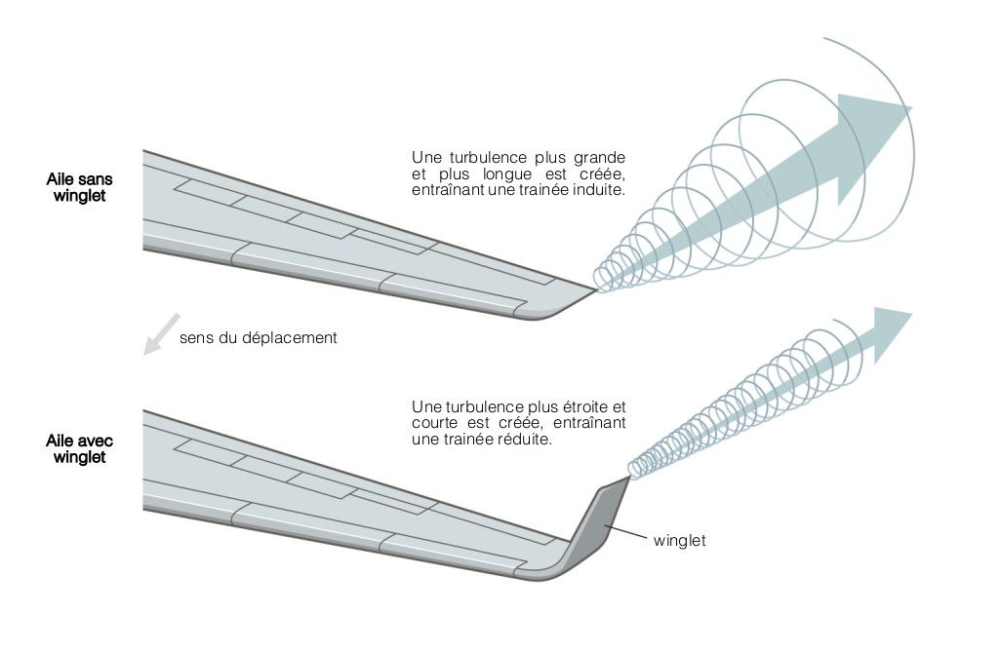
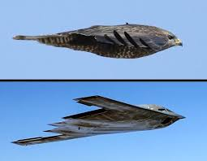
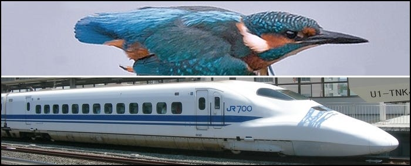
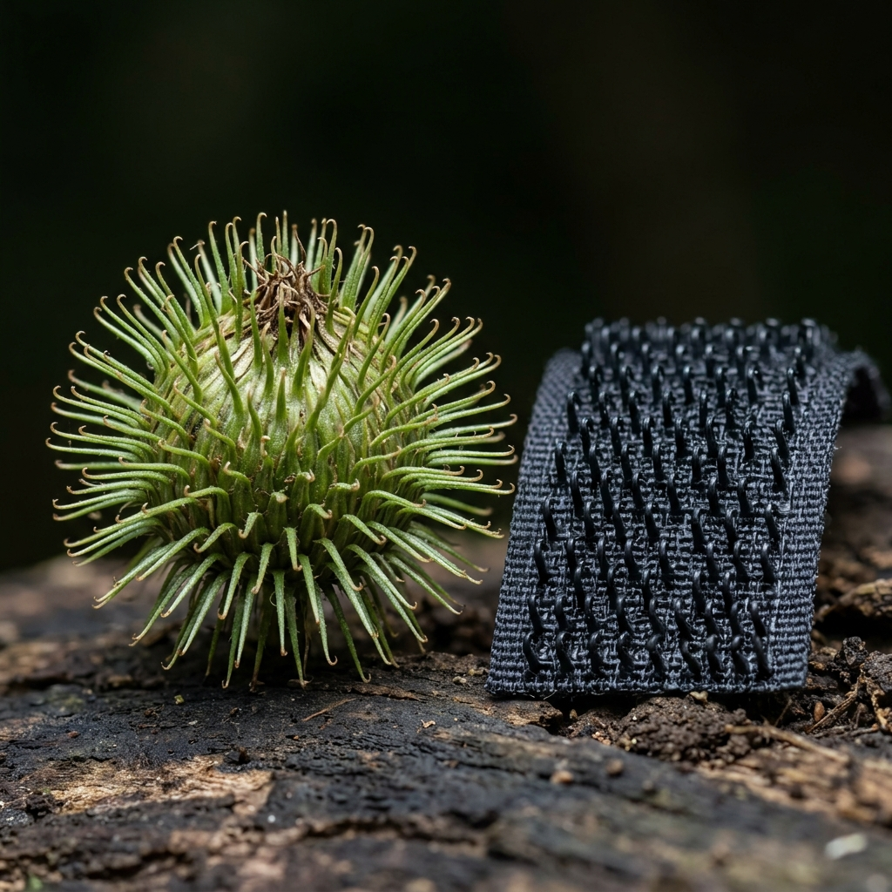
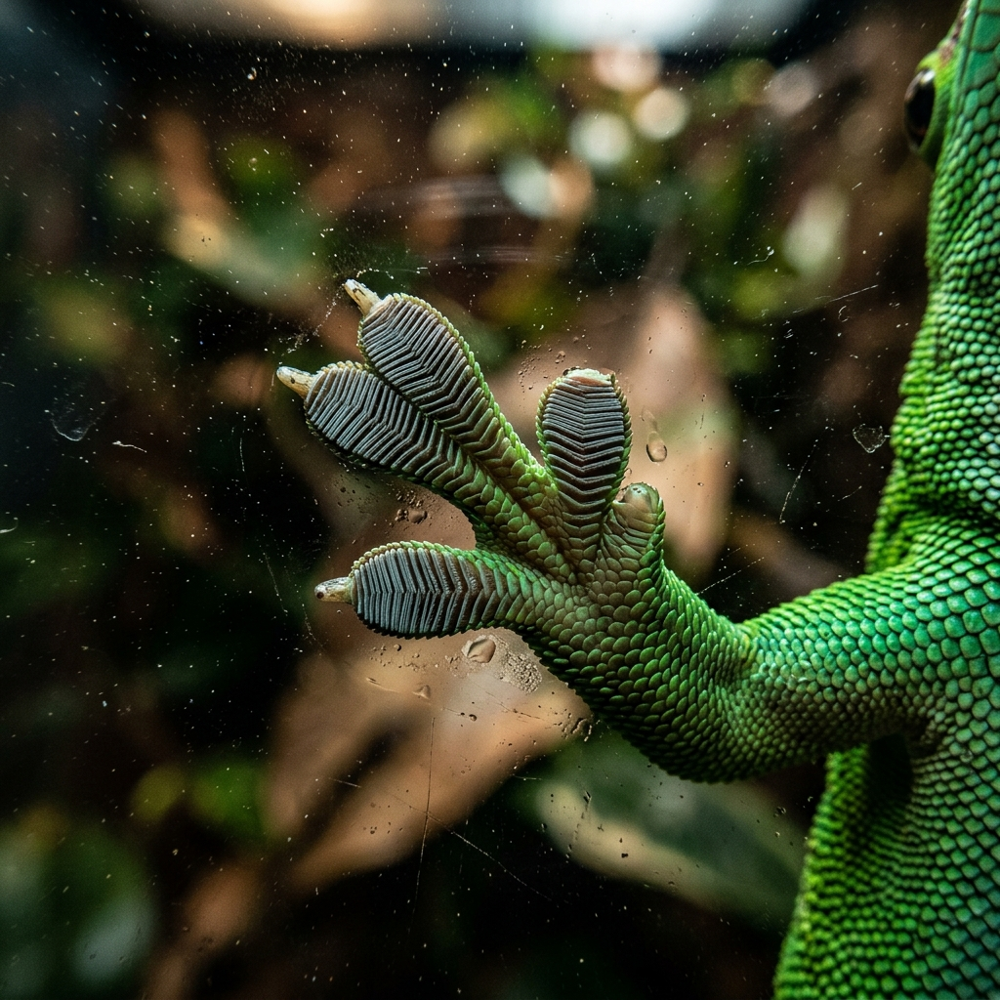
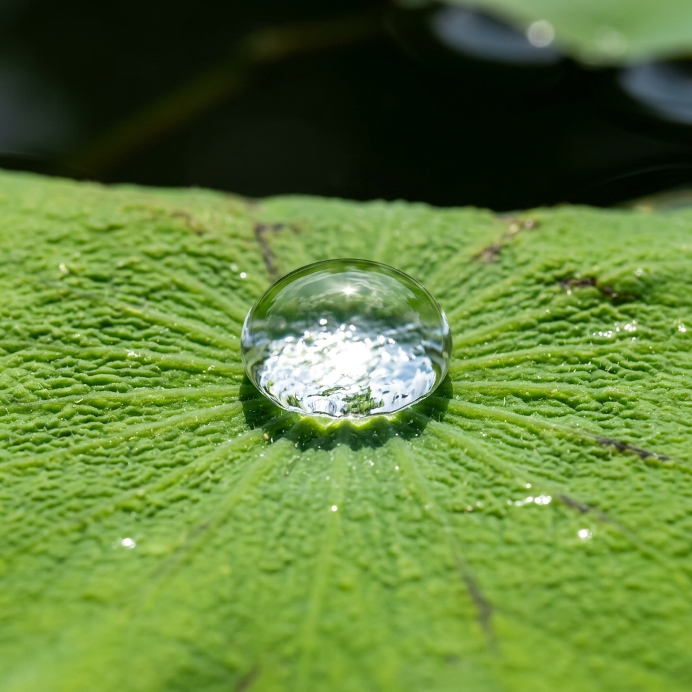

- 🦅 Inspiration : Le vol plané des grands rapaces.
- ✈️ Application : Les "winglets" (ailettes) au bout des ailes de l'Airbus A350.
- 💨 Fonctionnement : Empêche l'air haute pression de fuir et réduit les tourbillons.
- ✅ Bénéfice : 20% de traînée en moins et énormes économies de carburant.

- 🐙 Inspiration : La peau des céphalopodes (seiche, poulpe).
- 🔬 Mécanisme : Contraction de cellules pigmentées appelées "chromatophores".
- 🎨 Action : Changement instantané de la couleur et de la texture de la peau.
- 🛡️ Application : Camouflage adaptatif pour les véhicules militaires (invisibilité).

- 🐦 Inspiration : Le bec très profilé de l'oiseau Martin-pêcheur.
- 🚄 Application : Redesign du nez du train à grande vitesse japonais.
- 🔇 Problème résolu : Suppression du terrible "bang" sonore en sortant des tunnels.
- ⚡ Bénéfice : Aucune éclaboussure (pression), 15% d'énergie économisée.

- 🌿 Inspiration : Les fruits de la bardane accrochés aux poils de chien.
- 🔬 Mécanisme : Une surface couverte de minuscules crochets élastiques naturels.
- 💡 Invention : Création du système "scratch" à boucles par Georges de Mestral (1941).
- 🚀 Application : Attache solide et réversible, utilisée mondialement et par la NASA.

- 🦎 Inspiration : Les pattes du Gecko, capables de grimper sur du verre.
- 🔬 Mécanisme : Des millions de poils microscopiques (sétules).
- 🧲 Phénomène : Adhérence absolue via les forces intermoléculaires (van der Waals).
- 🩹 Application : Nouveaux adhésifs secs puissants sans aucune colle chimique.

- 🪷 Inspiration : Les feuilles de lotus toujours propres (superhydrophobie).
- 🔬 Mécanisme : Micro/nanostructures couplées à une cire naturelle.
- 💧 Action : La goutte d'eau reste sphérique et emporte les saletés en roulant.
- 🏢 Application : Verres, textiles et peintures de façade autonettoyants.